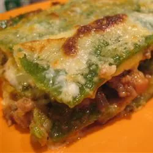

Home
Lasagne Verdi al Forno

My first Lasagne
Ingredients
- 5 ounces spinach - rinsed, stemmed, and dried
- ⅝ cup semolina flour
- 2 large eggs
- 1 teaspoon salt
- 1 ½ cups all-purpose flour
Steps
- Make pasta: Place a steamer insert into a saucepan and fill with water to just below the bottom of the steamer. Bring water to a boil. Add spinach, cover, and steam until bright green, about 2 minutes. Squeeze spinach to remove excess moisture and process in a food processor to make a paste. Add semolina, eggs, and salt; process until smooth. Transfer mixture to a large bowl and stir in enough flour to make a smooth dough. Knead briefly, then cover with a dish towel and set aside.
- Make ragu: In a large skillet, melt butter over medium-high heat. Cook and stir carrot, celery, onion, and bacon in hot butter until onion is translucent. Stir in pork, beef, and ham; cook and stir until crumbly and browned. Stir in beef stock, tomato paste, and oregano. Season with salt and pepper. Reduce heat to low, cover, and simmer for 20 minutes.
- While ragu is simmering, make béchamel: Combine butter and flour in a medium saucepan over medium-low heat. Whisk to make a roux. Remove from heat, let rest for 1 minute, then whisk in warm milk. Return to heat and simmer for 10 minutes, stirring constantly, until thickened. Season with salt and nutmeg. Remove from heat.
- ...